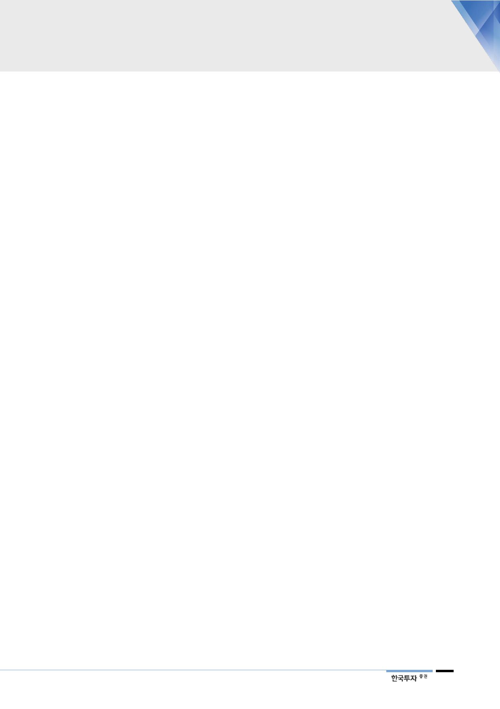

중국 매스 시장 경쟁 심화
국내와 해외 투자 비용
일단락 여부
한국 면세점 규제 리스크
Ⅳ. 리스크 요인
중국 프리미엄 라인업 강화가 예상되는 한편 매스 시장 경쟁 심화와 저성장이 우
려 요인이다. 중국 매출의 45% 이상을 차지하는 ‘이니스프리’ 성장이 부진해
3~4선 도시 위주로 확대 전략을 모색하고 있다. 중국 이니스프리는 매스 브랜드
에 비해 매출이 적고, 매장수도 국내 이니스프리의 1/2에 미치지 못해 성장 여력
이 있는 한편 중국 매스 시장 자체의 저성장에 로컬 브랜드들의 유통사와의 협업
으로 시장 내 빠른 점유율 상승을 감안하면 ‘이니스프리’ 성장률 제고 가능성을
현시점 가늠하기 쉽지 않다.
국내는 채널 경쟁력 및 마케팅 강화를 위한 투자가 진행되었다. 해외는 중국 마케
팅 강화 및 미주, 동남아 사업이 확대되고 있다. 한편 국내 및 중국 수익성 저하
와 미주 영업 손실은 투자 확대 결과다. 향후 투자 비용 일단락과 투자 성과가 관
전 포인트이다.
한국 화장품 산업 성장의 주요 축인 면세점에 대한 규제 리스크가 수시로 불거지
고 있다. 가장 큰 리스크는 외국인 구매금액과 현장 인도 제한이다. 면세점 내 화
장품 매출 비중이 약 60%에 달하는 만큼 화장품 산업에의 리스크 또한 불가피하
다. 이에 동사는 타이트한 구매 제한으로 리셀러 수요를 최소화하고 있으나 면세
점 관련 리스크가 불거질 경우 동사 또한 일부 영향이 불가피하다.
기업개요 및 용어해설
■ 기업개요
아모레퍼시픽은 1945년에 설립되어 40여 년간 부동의 국내 1위의 화장품 업체임. 대표적인 브랜드는 한방화장품 설화
수로 2009년 단일 화장품 브랜드 최초로 백화점 경로 매출 1천억원 달성, 2015년 1조원을 돌파함. 아모레퍼시픽은 중국
에서 가장 성공한 한국 화장품 진출 업체로 2017년 중국 시장 내 점유율은 2.5%임.
13